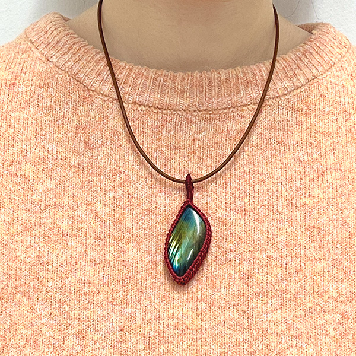
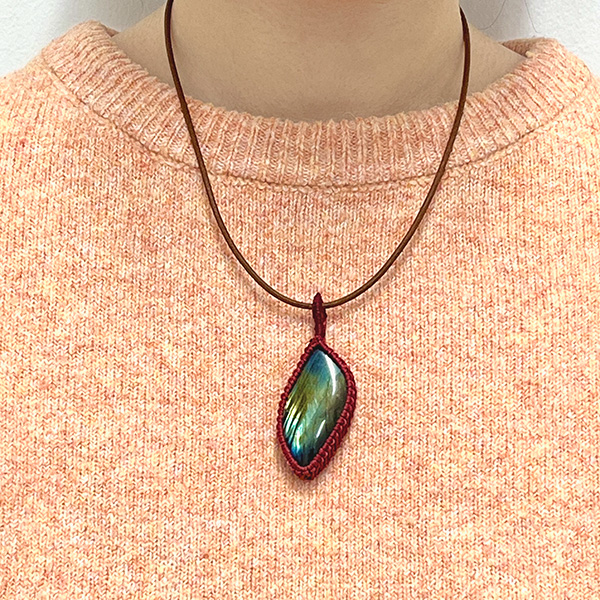
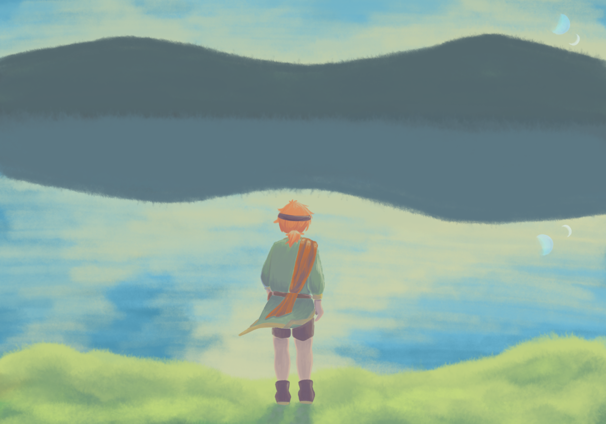
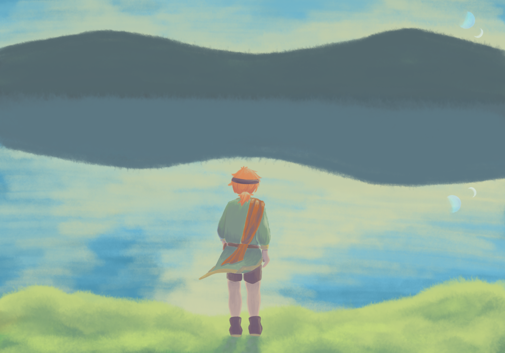

制作順
アクセサリー→物語→イラスト
アクセサリー→物語→イラスト
 

種類（サイズ）：ネックレス（紐：40cm、飾り部分：6cm）
材料：ラブラドル長石、ワックスコード【赤】、ネックレス用金具付き革紐【茶】
ラヴェリナ、聞いてくれるかい？ぼく、旅に出ることにしたよ。きみが見たいと言っていた海を見に行こうと思うんだ。
今日、村に来ていた旅商人たちに、一緒に旅をする許可を貰ったんだ。自分で交渉しに行ったんだよ。すごく緊張したけど、受け入れてもらえて良かった。
でもね、父さんには怒られちゃったんだ。お前は職人の息子なんだぞ！って。そんなこと言ったって、家の仕事を継ぐのは兄さんだって居るのにね。
あ、ごめん。グチ書いちゃった。これからは気をつけないと。リナに暗い事は伝えたくないんだ。
明日、出立する前にきみのお墓に行くよ。
▶︎▷▶︎▷▶︎▷▶︎▷
※横スクロールで次の物語を読むことができます。
もう3日、ずっと湖のそばを歩いてる。リナと眺めていた湖って、こんなに広かったんだね。
昨日と一昨日の日記は書けなかった。ごめんね。
今日は、昨日と一昨日の反省を活かして、昼休憩の合間にこの日記を書いているんだ。だって、夜は真っ暗で、手元も見えないし。しかも疲れてすぐ寝ちゃうしね。
もうすぐとなり村に着くんだ。今日はベッドで寝られるかな。
久々に会える人たちにも、ちゃんと会えるといいな。
▶︎▷▶︎▷▶︎▷▶︎▷
おはよう、ラヴェリナ。いい朝だね。
昨日はとなり村の村長さんの家で休ませてもらったんだ。ぼくたちの作った革かばんや服と交換で、パンやハーブをもらったよ。出来立てのパンはとてもおいしかったな。リナにも、食べてほしかった。
パン以外も色々ごちそうになったんだ。昨日は青半の日だったから。ラム肉も、ハーブをたくさん育てている村の料理だとまた違う味がするんだね。
商人さんたちは、この村からはハーブをたくさん取引して隣村に向かうみたい。今日も朝早くから商談をするんだって。ぼくも、もう行かないと。商人さんにお世話になるんだから。できることはしないとね。
▶︎▷▶︎▷▶︎▷▶︎▷
こんばんは、ラヴェリナ。
昨日はハーブの他に油や火打石、光石をもらったから、なんと暗い中でも字が書けるんだ！
実はぼく、リナからもらった蝶の羽の石を紐で編んで首から下げてるんだけどね、それを見たベルネに、他の石でも同じようにできないかって言われたんだ。
あ、ベルネはね、この商団の薬師で、頭が良くて、手先もとっても器用なんだ。いままで、この商団の裁縫や料理も担当してて、手伝いが増えて嬉しいって、ぼくにたくさん話しかけてくれるんだよ。
それでね、とりあえず休憩時間に光石を編んでみたら、とっても褒めてくれて。嬉しかったな……。
良い大きさの拡大石とかあったら、編んで商人さんに渡すといいよって。最近小さい字が読めないの気にしてるからって、アドバイスももらっちゃった。拡大石、いつか手に入ったら良いな。
▶︎▷▶︎▷▶︎▷▶︎▷
今日は1日雨だった。
本当はもう少し進んで、湖の反対側の村に泊まるつもりだったんだけど、野宿になっちゃった。まあ、森の中はぬれるとすべるからしかたないよね。
今はね、湖から少し離れた光る洞窟の中で雨をしのいでいるんだ。今日は月は見えないけれど白半の日だから、鉱物や苔たちがほんのり白く光ってる気がするよ。きみが見たら、きっとこう言うんだろうなぁ。「地面の中にも星空があるのね！」って。
あまりにもキラキラきれいだから、奥まで行ってみたかったんだけど、護衛のグレインさんがダメだって。こういう場所は、魔物や蛇が寝床にしていることがあるから気をつけろって言っていたよ。
いつもより夜の見張を増やさないといけないから、今日からぼくも交代での見張を任されるんだって。この日記を書き終わったら、なにをしようかなぁ。石を紐で編んでもいいし、革も数枚持ってきたから、夜なべして縫っても良いかも。何度も徹夜して兄さんたちと作ったことを思い出して、少しワクワクしちゃった。
▶︎▷▶︎▷▶︎▷▶︎▷
ようやく湖を抜けた。今日は湖と川のほとりにある村に滞在しているよ。ぼくたちの村からちょうど真反対にある、あの村。晴れた日にはリネとよく眺めていた、あそこに今ぼくはいるんだ。
向こう岸からぼくたちの村を見るのって、ちょっと不思議な気分だね。木々の中に点々と家があって。あのひらけた場所にある、亜麻畑はリナの家の畑。その隣の大きな家がリナの家で、さらにその横の少し小さな家がぼくの家。花陽の月だから、亜麻の花が咲くには早いね。窓から眺めていたら、あの一面が水色に包まれた景色がとてもなつかしくなっちゃった。
明日からは滝の下の港町に向かうんだって。そこから川を使って一気に山をくだるって商人さんたちが言ってた。どんどん村から離れていくのは、少しだけ・・・うんん、なんでもない。リナと海を見るって約束したから、頑張らないと。
▶︎▷▶︎▷▶︎▷▶︎▷
山の中は慣れないね。ずっとあの湖の近くで過ごしてきたから、湖が見えないのは、少し不思議な気分だ。もうしばらくは湖に浮かぶ二つの月を見ることはできないんだね。
あ、いや、別に、寂しいわけじゃないよ。あの湖にはリナとの思い出がたくさん詰まっている、それだけだから。
覚えてるよね。きみが湖を見ながら、「いつか海を見にいきたいの！この湖よりも、ずっとずっと、ずーーーっと！広いんだって！」って語ってくれたこと。きみの話を聞いて、僕もすごくわくわくしたんだ。
今はね、滝の側にある番小屋に商人さんたちと泊まっているよ。もう少しくだれば、町が見えるみたい。ここは少し古びているけれど、商人さんたちがよく使っている場所みたいで、ぼくたちの前にも使われてた形跡があったんだ。
あ、そうだ！ねぇリナ、聞いてくれるかい！ぼく、ベルネに火加減を褒められたんだ！彼女の料理を手伝った時に「へー、うまいじゃん」って！
商人さんは少し気難しくてとっつきにくいけど……。少しでも役に立ててるなら嬉しいな。
▶︎▷▶︎▷▶︎▷▶︎▷
▶︎▷▶︎▷▶︎▷▶︎▷
海は、誰かの涙の匂いがする。
ねぇ、ラヴェリナ。きみは、海のことを湖よりも広い湖と言っていたけど、少し違うかもしれない。ツンとしたにおいがするんだ。遠くからでもわかるくらい。
ぼくも、海を見たときに泣きそうになっちゃった。ちょっとだけね。あぁ、本当にちょっとだけだから心配しないで。
ここにたどりつくことが出来てよかった。道中は本当に大変だったからね。
滝をくだったり、貧困街近くの町でスリにあったり。そのスリは盗賊の手下で、旅商人さん達と大捕物をしたね。
あれはもしかしたら、後世まで自慢できるかもしれない。あぁでも、そうだね、お金も食料も取られたときは、本当にどうしようかと思ったよ。降雪の月だったし。
でも、もちろん楽しかったこともあるよ。白生青月の日や芳果の月に、違う町のお祭りに参加したこと。特に城下町の収穫祭、楽しかったなぁ。ランタンを飛ばして、夜通し歌って。そういえば、あのランタン、リナのところまでちゃんと届いたかな。
出会った人たちも、おもしろい人たちばかりだった。旅商人さんや、祭司さん。ぼくを助けてくれたおかみさんに、近衛騎士さんも。みんな、元気かな。また会いたいなぁ。
あ、盗賊達はもう勘弁。ちゃんと更生してて欲しいや。
空に飛竜が見える。ぼくを乗せてくれた飛竜とは違う飛竜だ。海を越えるのかな。
海の向こうにはなにがあるんだろう。博識なリナなら知ってるのかな。まぁどちらにしても、きっと大変な旅になるはずだよね。
きみにも見えてるといいな、この果てのない青が。
幼馴染（ラヴェリナ）の願い事を叶えるため旅をしている。 自分に自信が持てず幼馴染にいつも励まされて過ごしてきた。 幼馴染が亡き今、周りに心配をかけないよう明るく振る舞っている。 自分の見た目に無頓着で動きやすければそれでいい。
 

サイズ（用紙）：148×100mm（ポストカード）